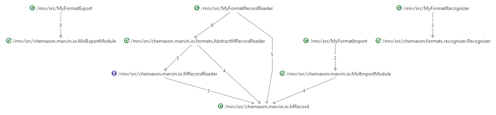
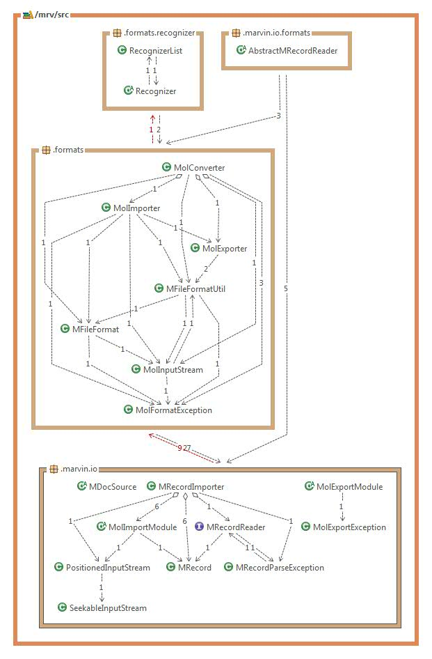

The API of Chemaxon IO allows you to implement your own format and to add it to the existing framework.
The following steps are needed:
- Creating file format metadata for your own format.
- Creating exporter for your own format.
- Creating importer for your own format.
- Creating record reader for your own format.
- Creating format recognizer for your own format.
A complete example code is available to demonstrate this:
Creating the metadata includes specifying file extension, importer, exporter, record reader, format recognizer and some format features like atomic coordinates, multiple records storage possibility.
MYFORMAT = new MFileFormat(
"My Format", // format description
"myformat", // format name
null, // no MIME type
"myformat myf", // file extension
"MyFormatRecordReader", // record reader class
"MyFormatImport", // import module implementation
"MyFormatExport", // export module implementation
"MyFormatRecognizer 10", // recognition class with priority specification
MFileFormat.F_IMPORT | MFileFormat.F_EXPORT | MFileFormat.F_RECOGNIZER
| MFileFormat.F_MOLECULE | MFileFormat.F_COORDS
| MFileFormat.F_MULTIPLE_RECORDS_LEGAL
| MFileFormat.F_MULTIPLE_RECORDS_POSSIBLE);
For a complete source code, please see Init.java.
After this step the format is registered by:
MFileFormatUtil.registerFormat(Init.MYFORMAT);
In order to create your own format exporter you need to implement the convert() method of chemaxon.marvin.io.MolExportModule which is the
abstract base class of molecule export modules. The convert() might return String or byte array or image object.
Optionally, you can implement the open(String fmtopts) and close() methods also.
The overriding open(String fmtopts) method opens the exporter stream and should call super.open(fmtopts) at the beginning.
In case of some multi-molecule formats such as RDfile, files begin with a header.
This header must be returned by open(), either as a String object or a byte[] array.
The close() method is called after the last convert() to close the stream if needed.
For a complete source code, please see MyFormatExport.java.
The MolImportModule is the base class of Molecule import modules.
The two basic abstract methods are the createMol() which creates a new target molecule object and the readMol(Molecule mol) which reads a molecule from the file.
For a complete source code, please see MyFormatImport.java.
Record is a string (or byte representation) of a single molecule with properties in a multi-molecule file.
Record reading is faster than reading into molecule objects and makes property pre-reading possible.
If you would like to use record reading you have to implement the MRecordReader interface. MPropHandler helps the property pre-reading.
For a complete source code, please see MyFormatRecordReader.java.
Sometimes it is useful to implement the format recognition
for your own format to detect the input format from the content of the structure file
in order to import the structure file without file format specification parameter.
The implementation of the tryToRecognize() and needsMore() from the Recognizer interface is needed. This functionality is just optional.
For a complete source code, please see MyFormatRecognizer.java.
This picture illustrates how the classes related to your own format connect to the existing framework:

General overview of IO classes in the existing framework:

Behavior of IO classes in the existing framework:
- RecognizerList:
List of format recognizers.
Used by the recognizer class to specifiy the possible formats detected during the format recognition.
- Recognizer:
File format recognizer base class. Tries to check the possible formats checking the input line by line.
- MRecord: Representations of a record where a record is a string (or byte representation)
of a single molecule with properties in a multi-molecule file.
- MRecordReader: Interface for record reading, AbstractMRecordReader is a basic implementation which
is further exteded by the specific import types.
- AbstractMRecordReader: Abstract record reader class.
It is able to read lines and to create line number mappings for the records.
- MolConverter:
Converts between molecule file formats, allows simple conversion, splitting and merging structures.
- MolImporter: Molecule file importer.
The input file format is guessed automatically or specified as an import
option to the constructor.
For more information on supported formats, please visit
File Formats in Marvin.
- MolExporter: Molecule exporter class.
The output file format can be specified as an argument to the constructor
of this class. For more information on supported formats, please visit
File Formats in Marvin.
- MFileFormat: Collection of file format descriptors.
- MFileFormatUtil: File format related utility functions like creating specific format export modules,
registering and handling new file formats.
- MolInputStream: Molecule input stream that has the ability to determine the input file format.
- MDocSource: Abstract molecule and document reader/importer class.
- MRecordImporter: Record and structure reader used by MolImporter internally.
- MolExportModule: Abstract base class of molecule export modules.
An export module for format "XXX" must have the name chemaxon.marvin.modules.XxxExport.
Converted structures are returned as Strings or byte[] arrays.
- MolImportModule: Abstract base class of Molecule import modules.
- PositionedInputStream: Positioned input stream that has the ability
to set / get the stream position as well as put back some parts already read.
- SeekableInputStream: InputStream that makes possible to set the file-pointer offset position.
- MolFormatException: Exception that is thrown in case of molecule file format detection failure and other problems which occured
during import.
- MolExportException: Molecule export exception for export errors.
- MRecordParseException: Exception for record reading errors.